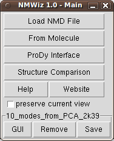
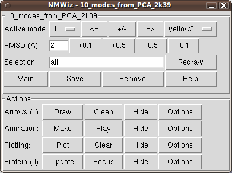
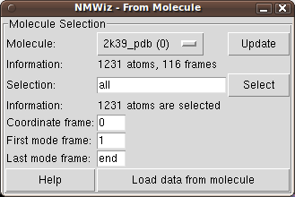
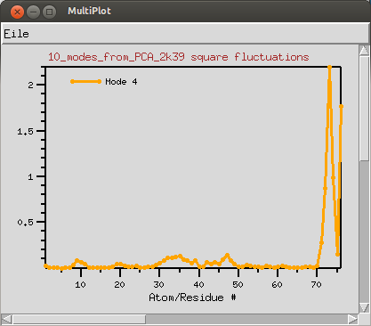
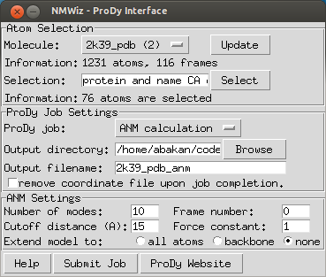
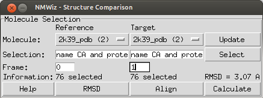

Normal Mode Wizard
 ANM modes for p38 MAPK |
 ANM vs. PCA modes for p38 |
 p38 network model |
|  |
| NMWiz Main Window |
|  |
| NMWiz GUI |
|  |
| From Molecule |
|  |
| Mobility Plot |
|  |
| ProDy Interface |
|  |
| Structure Comparison |
Tips
To get instant help click .
A NMWiz GUI is generated for each dataset loaded into NMWiz. These interfaces are independent of each other, hence allow for comparison of different data sets.
NMWiz GUI allows for visualizing, animating, and plotting modes. Arrow size, animation length, graphics quality etc. can be adjusted using panels after they are switched on.
These panels are hidden from user at startup.Active Mode and Color
The top panel enables choosing the active mode and color. When the active mode is changed, previously drawn mode arrows will be undisplayed. This behavior and other graphics options can be changed from the "Arrow Graphics Option" panel.
Tips
When visualizing a large system, keep the resolution low while making
adjustments for a more responsive experience.
If the arrow graphics are too crowded, draw arrows for a subset of
residues that are evenly spaced, e.g. try the selection string
, which will draw an arrow for
every fourth residue.
Square-fluctuations for the active normal mode can be plotted by clicking on the button. Plots will be generated using MultiPlot plugin.
Tip: Clicking on the plot will label and highlight the residue (or atom) in the VMD display.
ProDy interface allows users to submit ANM, GNM, and PCA/EDA calculations for proteins loaded in VMD. User needs to download and install ProDy v0.9 or later.
ProDy interface lists molecules available for calculations. If all molecules loaded in VMD are not displayed, click . ANM and GNM calculations require a coordinate set. PCA calculations require multiple coordinate sets. Note that you can perform atomistic calculations by changing the atom selection. If you perform atomistic ANM or GNM calculations adjust the cutoff distance parameter accordingly. Upon completion of the calculations, NMWiz automatically loads the results.
NMWiz can be used to generate deformation vector arrows for a pair related molecules or a pair of frames loaded for the same molecule.
This interface lists molecules available for comparison. If all molecules loaded in VMD are not displayed, click . User needs to make a selections for both molecules that will result in selecting the same number of atoms. NMWiz will generate arrows between atoms in these selections.
NMD files (extension .nmd) are plain text files that contain at least normal mode and coordinate data. PCA, EDA, NMA, ANM, or GNM data can be stored in NMD files. Recognized data fields are listed below, those required are emphasized.
coordinates - Coordinates must be provided in one line as a list of
decimal numbers. Number of atoms in the system is deduced from size of this
data line.
mode - Normal mode array. Each normal mode array must be provided in
one line as a list of decimal numbers. Mode array may be preceded by mode index
and mode length (square root of variance or inverse of frequency).
title - A title for the dataset.
names - Atom names. Default is "CA" for all atoms.
resnames: Residue names. Default value is "GLY".
chainids: Chain identifiers. Default value is "A".
resids: Residue numbers. If this data line if not found, residue
numbers are started from 1 and incremented by one for each atom.
betas: Beta factors. Default value is 0 (zero). B-factors are used
to color the protein representation.
Note that all data types must be listed in a single line. The size of data lines must match the number of atoms in the system (the size of coordinates line).
NMD file example (all lines are truncated):
title 1p38_anm names CA CA CA ... resnames GLU ARG PRO ... chids A A A ... resnums 4 5 6 ... betas 69.99 59.83 47.29 ... coordinates 27.552 4.354 23.629 24.179 4.807 21.907 ... mode 1 2.37 0.039 0.009 0.058 0.038 -0.011 0.052 ... mode 2 1.73 -0.045 -0.096 -0.009 -0.040 -0.076 -0.010 ... mode 3 1.70 0.007 -0.044 0.080 0.015 -0.037 0.062 0.012 ...
The complete file can be downloaded from here: p38_MAPK_1p38_anm.zip
lists all existing normal mode dataset handles loads a dataset in NMD format shows NMWiz main window
You can get a handle of a dataset as follows:set nmdhandle [nmwiz load p38_MAPK_1p38_anm.nmd]Or you can use the list command:
set nmdhandle [lindex [nmwiz list] 0]This handle can be used with the following commands:
get number of atoms get a list of all existing normal mode dataset handles set molecule coordinates get number of modes get mode array set mode array get index of mode set length of mode add new mode
Combining modes:
The following examples shows how to combine two modes linearly after scaling them by their lengths:set nmdhandle [lindex [nmwiz list] end] set m1 [$nmdhandle getmode 1] set l1 [$nmdhandle getlen 1] set m2 [$nmdhandle getmode 2] set l2 [$nmdhandle getlen 2] $nmdhandle addmode [vecadd [vecscale $l1 $m1] [vecscale $l2 $m2]]
Inverting a mode:
The following examples shows how to invert a mode:set nmdhandle [lindex [nmwiz list] end] set m1 [$nmdhandle getmode 1] $nmdhandle setmode 1 [vecinvert $m1]
Change coordinates:
The following examples shows how to change molecule coordinates:set nmdhandle [lindex [nmwiz list] end] set zeros [vecscale 0 [$nmdhandle getcoords]] $nmdhandle setcoords $zeros
Citation: Bakan A, Meireles LM, Bahar I ProDy: Protein Dynamics Inferred from Theory and Experiments Bioinformatics 2011 27(11):1575-1577.
{kind=link}
{kind=link}
{kind=link}
{kind=link}
{kind=link}
{kind=link}